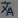

Translating into different languages#
IDE supports translation of page names, page descriptions, and text boxes into different languages.
Localization menu#
Click the Localization button  to open the menu. The button is located in a Text element's input field and input fields Page Name and Description. An example of the Localization menu is represented in the figure below.
Each Text field of the menu corresponds with a Portal (HMI View) locale which you can choose in Portal user profile.
Type translations in the Text column of the menu. Choose the language in Portal user profile to display the translated text.
Translation table#
The Translation table is a table with special keys that hold translations of the text into different languages. These keys are used as the i18n function arguments. To open the Translation table, click the Options button in the page editor top panel's right, and go to Localization > Add translation. You can also get to the table via a shortcut: press Ctrl + Shift + L, and open it. See an example of the Translation table in the figure below.
The i18n function#
The i18n function is another way to translate elements into different languages. You can call i18n from the Expression editor. The function has the following syntax:
i18n ("key", "locale")
The argument key defines the key from the Translation table or one of the Text elements with translation configured via the Localization menu. The argument locale defines the language to be displayed. If not set, this argument corresponds with the current Portal locale.
You can use an interactive help tool when typing the key argument. Type quotation marks and place the cursor between them, then press Ctrl + Space combination to open the list of available keys. As you can see in the figure below, there are custom key names configured in the Translation table and the keys generated by the system.
Parent article:
- Page editor
This article shortly tells about pages, page editor, and its interface.